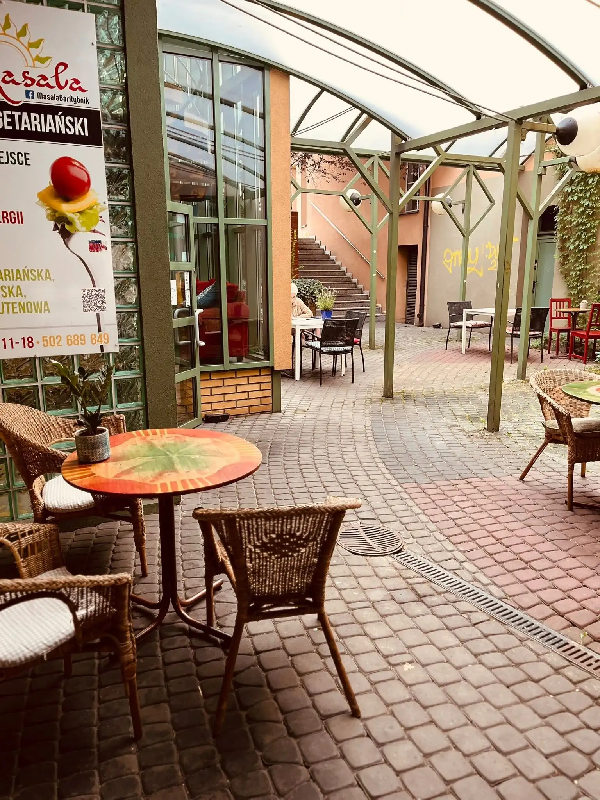
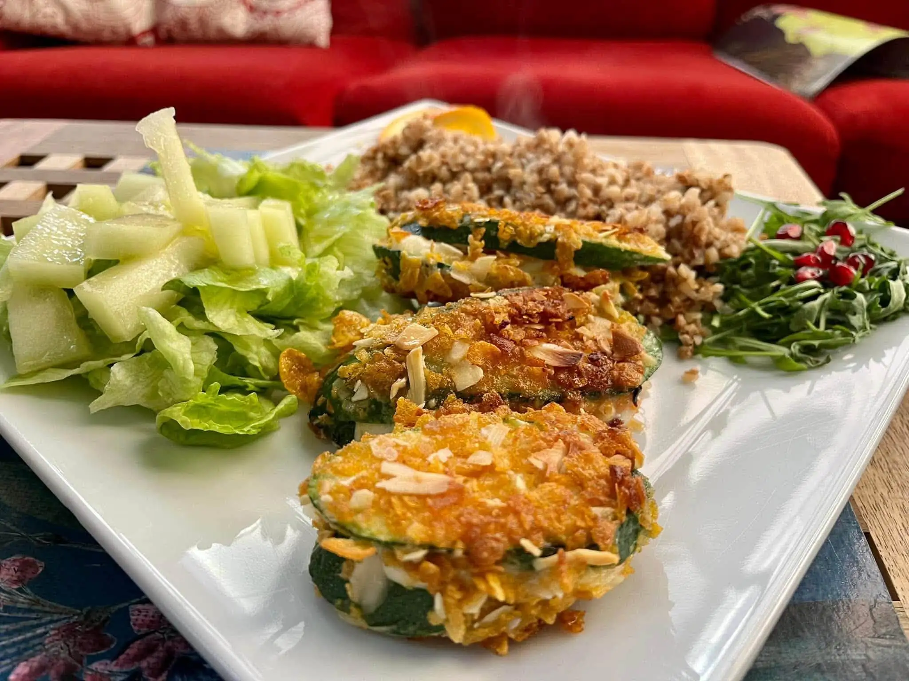
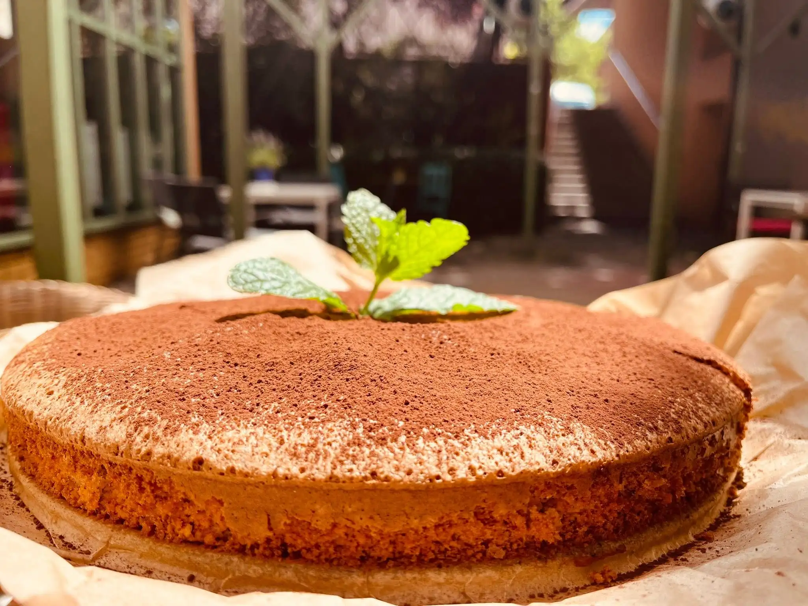
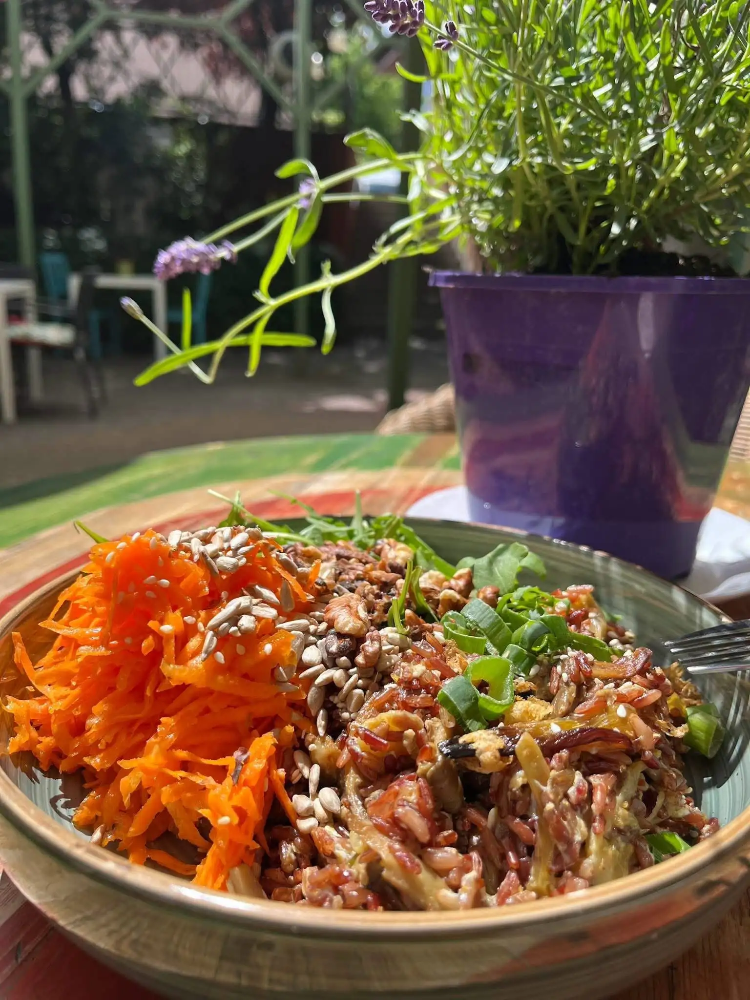
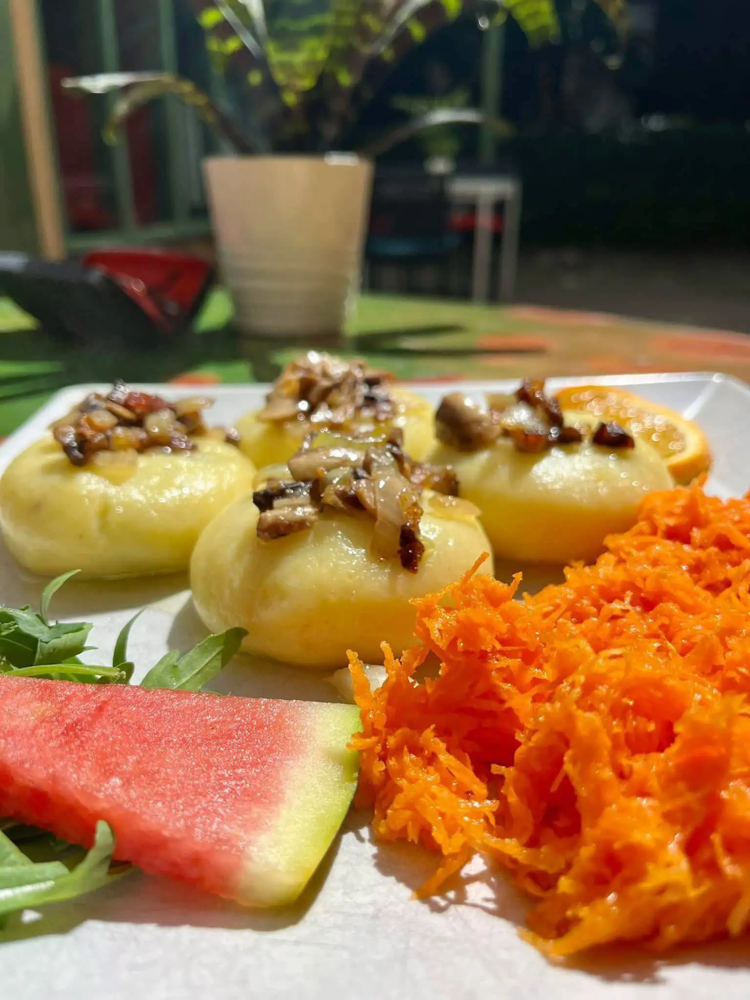
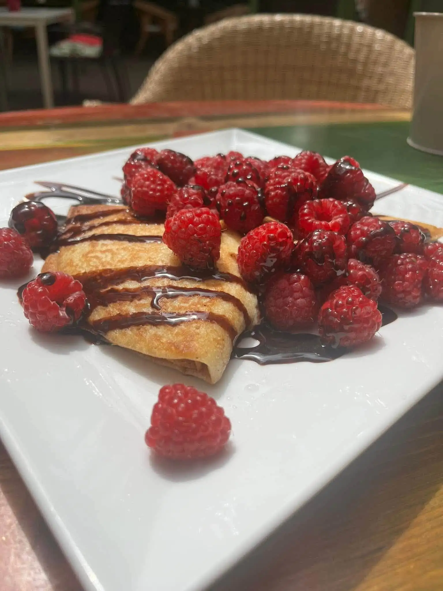

Prawdziwie wegetariańska oaza. Zjedz smacznie, dostarcz organizmowi dobrej energii i poczuj magię orientu.


Masala Bar to wegetariańska oaza w sercu Rybnika. Oferujemy zdrową, pełną energii kuchnię, która zachwyca nie tylko smakiem, ale i jakością składników.
Niezależnie od tego, czy szukasz szybkiego i sycącego posiłku na miejscu, czy wolisz wziąć pyszne danie na wynos, nasza kuchnia wegetariańska dostarczy Ci niezapomnianych wrażeń w przystępnej cenie (20–40 zł za osobę).



"Jedzenie mega dobre. Świeże warzywa, świetnie dobrane przyprawy, bardzo sycące pyszności! Duży plus za wege opcje!"
"Niesamowite miejsce na mapie Rybnika! Zdrowo, szybko, tanio i przesmacznie. Obsługa w Masala Bar to czyste złoto."
"Polecam każdemu kto lubi kuchnie indyjską i zdrowe jedzenie. Porcje są duże, smak rewelacyjny, a ceny bardzo przystępne!"